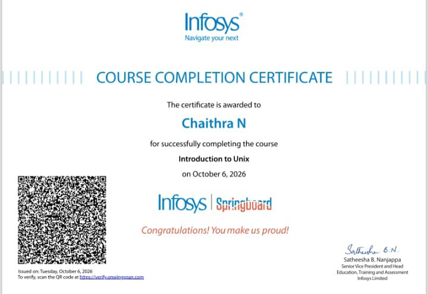

Hi, I'm Chaithra N
A passionate 2nd-year Computer Science (Data Science) undergraduate student focused on solving real-world challenges with Python, Machine Learning, and SQL. Creator of CropShield AI, competitive hackathon participant, and continuous learner.

About Chaithra N
Bridging engineering fundamentals and modern data science to build impactful solutions.
Passionate about leveraging Artificial Intelligence to solve societal challenges.
I am a 2nd-year Computer Science & Engineering (Data Science) undergraduate at Adhichunchanagiri Institute of Technology (2025 - 29). My technical journey is driven by curiosity—transforming complex datasets into actionable insights and deploying intelligent machine learning models that make a difference.
From conceptualizing CropShield AI to assist farmers with early agricultural threat detection, to designing digital marketing platforms for rural artisans, I enjoy creating software that directly impacts lives. I have actively competed in competitive hackathons including Adhi Tantra 2026 and hold industry-recognized certifications from Infosys Springboard.
Quick Profile
Skills & Proficiencies
Core technical stack spanning programming languages, artificial intelligence, databases, and foundational computer science.
Primary language for Machine Learning modeling, data pipelines, NumPy, Pandas, automation, and project algorithms.
Predictive modeling, classification, model evaluation, supervised learning, and AI-driven agricultural solutions.
Relational schema design, complex query writing, indexing, table relationships, aggregation, and backend data storage.
Object-Oriented Programming, enterprise fundamentals, collections, data structures. Certified by Infosys Springboard.
Low-level memory understanding, pointer logic, algorithm implementation, structured problem solving, and computational efficiency.
Arrays, Linked Lists, Trees, Stacks, Queues, Sorting algorithms, Search strategies, and asymptotic time/space analysis.
Command-line interface (CLI) navigation, file permissions, shell workflows, process monitoring. Certified by Infosys Springboard.
Process management, CPU scheduling, thread synchronization, deadlocks, memory management, and virtual memory concepts.
HTML5, responsive CSS3 styling, JavaScript interactions, and UI layout creation for web project showcases.
Featured Projects
Real-world systems built with artificial intelligence, data engineering, and modern development stacks.
CropShield AI
AI-Driven Agricultural Crop Protection & Diagnostic SolutionCropShield AI is an intelligent crop health monitoring and protection system built to identify and remediate agricultural threats early. By leveraging predictive machine learning models and computer vision pipelines, it assists farmers in recognizing plant pathogens, leaf blights, and pest infestations, delivering actionable remedies that improve agricultural productivity.
Assist Rural Product Marketing
Technology-Driven Marketplace for Rural ProducersDeveloped a targeted software solution to bridge the market accessibility gap for rural artisans and local producers. The system connects rural products directly with potential regional and urban customers, significantly increasing product visibility and eliminating intermediary markups.
My Education
Consistent academic foundation in Computer Science, Data Science, and analytical problem-solving.
Bachelor of Engineering (B.E.) in CSE (Data Science)
Adhichunchanagiri Institute of Technology, Chikkamagaluru, Karnataka
Currently in 2nd year, specializing in Data Science and Machine Learning engineering. Deep coursework in Artificial Intelligence, Object-Oriented Programming, Database Management Systems, Operating Systems, Data Structures & Algorithms, and Predictive Modeling.
Pre-University Course (PUC - Science)
St Joseph’s PU College Excellence, Bhadravathi, Karnataka
Completed science stream with focus on analytical reasoning, mathematical fundamentals, physics, and computer science basics that built strong foundations for engineering.
Secondary School Leaving Certificate (SSLC - 10th)
St Charles Kannada High School, Bhadravathi, Karnataka
Demonstrated high academic consistency, school-level leadership, and strong fundamentals in science and mathematics.
Certifications & Credentials
Official certificates awarded by recognized industry leaders and engineering symposiums. Click any certificate to preview.
.jpeg)
ADHI TANTRA 2k26 Hackathon
National Hardware Hackathon participation organized with IEEE & CSI. Rigorous 24-hr ideation and collaborative hardware/software problem-solving.
.jpeg)
Java Programming Fundamentals
Core Object-Oriented Programming (OOP), class hierarchies, encapsulation, exception handling, and Java standard library.

Introduction to Unix
Unix OS architecture, filesystem navigation, shell commands, pipes & filters, user permissions, and process management.
Key Achievements
Notable recognitions, competitive participations, and engineering milestones achieved.
ADHI TANTRA 2k26 Hackathon Finalist / Participant
Selected and actively participated in the state-level ADHI TANTRA 2k26 Hardware Hackathon conducted by the Faculty of Engineering & Technology at Adichunchanagiri University, supported by IEEE, CSI, and AICTE.
- Collaborated under timed competitive constraints to build a tech prototype.
- Pitched engineering solution before an esteemed panel of academic & industry judges.
CropShield AI Agricultural R&D Initiative
Spearheaded the 6-month research and development of CropShield AI, applying computer vision and machine learning techniques to help smallholder farmers diagnose plant diseases accurately.
- Formulated an end-to-end dataset curation and machine learning workflow.
- Synthesized actionable agronomic treatment recommendations into the AI pipeline.
Infosys Springboard Certification Laurels
Successfully earned dual industry certifications in Java Programming Fundamentals and Introduction to Unix via Infosys Springboard, reinforcing software development discipline.
- Mastered modular OOP architecture and Unix shell automation.
- Earned verified credentials with high assessment benchmarks.
Consistent Academic Excellence
Maintained consistent high performance across secondary education (85.77%), pre-university (80.4%), and undergraduate studies (7.17 CGPA) in Data Science (2025 - 29).
- Specialized focus on core CS subjects, DBMS, and advanced data analytics.
- Balanced academic coursework with intensive project building and hackathons.
My Resume & Video
Review my complete curriculum vitae and watch my video profile introduction.
Video Introduction & Resume Pitch
Watch my self-introduction highlighting my passions, engineering philosophy, and motivation to contribute to innovative tech teams.
Chaithra N - Professional CV
Comprehensive resume featuring full coursework, contact credentials, technical proficiencies, project chronologies, and hackathon records.
Let's Connect
Whether you have an internship opportunity, project collaboration, or question, I would love to hear from you!
Send a Direct Message
Fill in the form below and I will get back to you promptly.